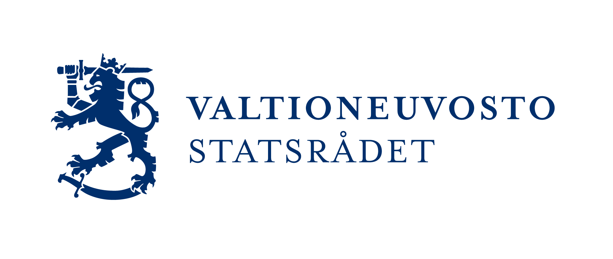
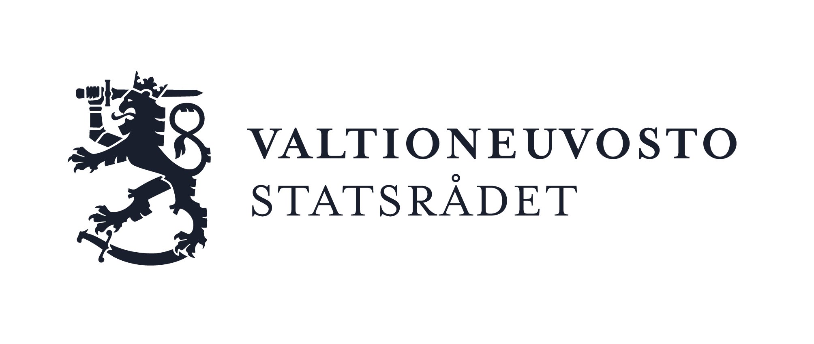
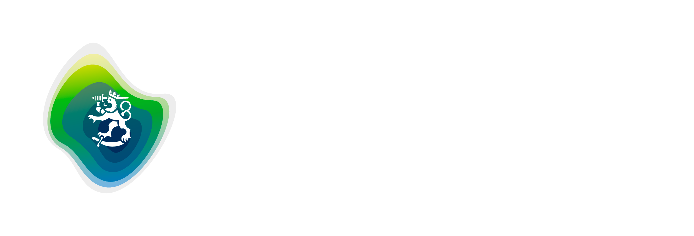
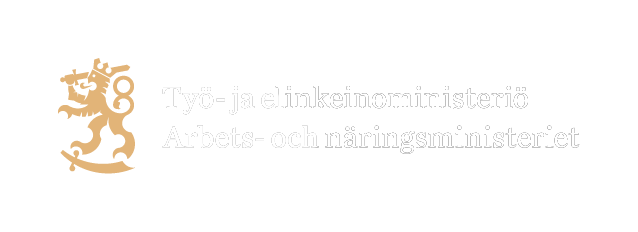
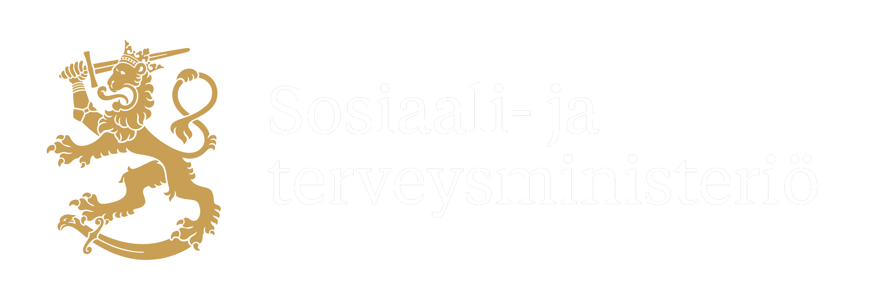

1. Strategiset tavoitteet ja äänensävy
Kaikki toteutukset noudattavat seuraavia periaatteita:
- Saavutettavuus: Sivustot noudattavat digipalvelulaissa asetettuja WCAG 2.1 A- ja AA-tason kriteerejä. Toteutuksessa huomioidaan myös tulevan WCAG 2.2 -version vaatimat täsmennykset.
- Luotettavuus: Sivustojen ilme on virallinen, rauhallinen ja asiantunteva, mutta myös tyylikäs ja viimeistelty. Visuaalisten efektien käyttö on harkittua ja hienovaraista.
- Yhtenäisyys: Käyttökokemus on yhtenäinen kaikkien ministeriöiden sivustoilla.
- Käyttäjäkeskeisyys: Sisällön löydettävyys ja käytettävyys suunnitellaan käyttäjän tarpeiden mukaan.
Äänensävy ja käyttöliittymätekstit
- Virallisuus ja selkeys: Kieli on asiallista, neutraalia ja helposti ymmärrettävää. Se on sujuvaa mutta virallista — ei sinuttelevaa.
- Läpinäkyvyys: Painikkeet, linkit ja vastaavat kertovat selkeästi, mitä niitä klikkaamalla tapahtuu. Käyttäjää ei harhauteta.
- Virheilmoitukset: Virheilmoitukset ovat syyllistämättömiä ja ratkaisukeskeisiä. Niissä kerrotaan, mikä meni vikaan ja annetaan ohje tilanteen korjaamiseksi. Virheilmoituksissa ei anneta ymmärtää, että käyttäjä on tehnyt virheen, vaan kerrotaan, mitä pitää tehdä toisin.
2. Saavutettavuus
Nämä vaatimukset koskevat kaikkia komponentteja ja toteutuksia. Komponenttikohtaiset tarkennukset löytyvät kunkin komponentin kuvauksesta.
Focus-indikaattori ja näppäimistökäyttö
Kaikki toiminnot ovat käytettävissä näppäimistöllä. Fokus ei saa kadota tai hypätä arvaamattomasti sivulla liikuttaessa. Focus-indikaattorin tulee olla vähintään 3 px paksu ja sen kontrastisuhteen taustaväriin nähden vähintään 3:1. Fokusvärinä käytetään tummennettua oranssia #C76F00.
Kosketuskohteiden minimikoko
Kaikkien kosketuskohteiden minimikoko on 44×44 px. Vaatimus koskee esim. painikkeita, linkkejä, lomake-elementtejä ja navigaatioelementtejä.
Väri ja kontrasti
Tekstin ja taustan kontrastisuhde on vähintään 4.5:1. Väri ei yksin riitä tiedon välittämiseen — jokainen värikoodattu tieto ilmaistaan myös tekstillä tai ikonilla.
Animaatiot
Animaatioiden enimmäiskesto on 0.2s ease-in-out. prefers-reduced-motion-asetusta kunnioitetaan: jos asetus on päällä, animaatioita ei näytetä.
Sivun rakenne ja landmarks
- Sivun eri alueet merkitään HTML5-elementeillä:
<nav>,<main>,<header>,<footer>jne. - Jokaisella navigaatioelementillä on yksilöllinen
aria-label. - Sivun alussa on visuaalisesti piilotettu skip link ("Siirry sisältöön"), joka näkyy fokusoitaessa.
Ruudunlukijatekstit (sr-only)
sr-only piilottaa elementin visuaalisesti mutta näyttää sen avustavalle teknologialle. Saavutettavuusteksteissä ei käytetä display: none tai visibility: hidden — ne piilottavat elementin myös ruudunlukijoilta.
3. Design-tokenit
Väripaletti
Väripaletti jakautuu kolmeen ryhmään: päävärit, tukivärit ja taustavärit.
Päävärit
Tukivärit
Pienimuotoinen rooli toiminnallisuuksien osoittamisessa, infografiikassa ja huomionauhan vakavuustasoissa.
Taustavärit
Ministeriöiden dynaamiset värit
Värisävyt alla ovat havainnollistavia ja ylläpidetään käsin tämän dokumentin design.md-lähteen mukaisina. Tuotantototeutuksessa väriteemat ajetaan aina dynaamisina CSS-muuttujina (ks. design.md §17), ei kiinteinä heksoina.
Valtioneuvoston kanslia
Ulkoministeriö
Oikeusministeriö
Sisäministeriö
Puolustusministeriö
Valtiovarainministeriö
Opetus- ja kulttuuriministeriö
Maa- ja metsätalousministeriö
Liikenne- ja viestintäministeriö
Työ- ja elinkeinoministeriö
Sosiaali- ja terveysministeriö
Ympäristöministeriö
Virhe-, varoitus-, ilmoitus- ja focusvärit
Virhe-, varoitus-, ilmoitus- ja focusvärien on erotuttava riittävän selvästi sivuston muista väreistä. Värit ovat kaikilla sivustoilla samat, ja myös niitä koskee 4.5:1-kontrastivaatimus (ks. osio 2, Väri ja kontrasti).
3.2 Typografia ja tekstihierarkia
Kaikki koot rem-yksiköissä, base 16 px.
Pystyvälistykset
Otsikon yläpuolinen väli on suurempi kuin alapuolinen — otsikko sitoutuu visuaalisesti alla olevaan sisältöön.
| Elementti | Väli yläpuolella | Väli alapuolella |
|---|---|---|
| H1 | 0 (sivun ensimmäinen elementti) | 24px / --space-m |
| H2 | 48px / --space-xl | 16px / --space-s |
| H3 | 32px / --space-l | 8px / --space-xs |
| H4 | 24px / --space-m | 8px / --space-xs |
| Ingressi | 0 (seuraa H1:tä) | 32px / --space-l |
| Leipäteksti | 0 | 16px / --space-s (kappaleiden välillä) |
| Pieni teksti | 8px / --space-xs | 8px / --space-xs |
| UI-teksti | 0 | 0 |
| Metatiedot | 8px / --space-xs | 0 |
3.3 Välistykset
Välistys noudattaa 8px:n järjestelmää.
| Token | Arvo | Käyttö |
|---|---|---|
--space-xs | 8px | Pienet sisäiset välit, ikonin ja tekstin väli |
--space-s | 16px | Kappaleiden väli, lomake-elementtien väli |
--space-m | 24px | Osioiden sisäinen padding, korttien sisäinen tila |
--space-l | 32px | Osioiden väli, komponenttien väli |
--space-xl | 48px | Suurten osioiden väli, H2:n ylämarginaali |
--space-2xl | 64px | Sivun pääosioiden väli |
3.4 Pyöristys
Käyttöliittymässä vältetään sekä täysin suoria kulmia että voimakkaita pyöristyksiä. Sen sijaan käytetään kevyttä, hienovaraista pyöristystä (border-radius: 5px), joka pehmentää ilmettä tinkimättä virallisesta ja asiantuntevasta tunnelmasta.
Pyöristys koskee kaikkia rajattuja elementtejä: painikkeita, lomake-elementtejä, kortteja, tageja, huomionauhoja, hakukenttiä, valintalaatikoita ja muita vastaavia käyttöliittymäelementtejä.
3.5 Interaktiivisten elementtien tilat
Kaikki interaktiiviset elementit reagoivat käyttäjän toimintaan seuraavasti:
| Tila | Kuvaus |
|---|---|
| Hover | Hienovarainen vaste, taustavärin 10 % tummennus |
| Active | Taustavärin 20 % tummennus |
| Disabled | Matala kontrasti (opacity: 0.4) ja not-allowed-kursori |
3.6 Tunnukset
Valtioneuvoston ja ministeriöiden tunnukset ovat leijonamerkin ja nimilogon kiinteitä yhdistelmiä. Tunnuksia käytetään ensisijaisesti kokonaisina yhdistelminä — ainoastaan poikkeustapauksissa merkkiä tai logoa voidaan käyttää toisistaan erillisinä.
Väriversiot
Tunnuksesta on käytettävissä kolme väriversiota taustan mukaan.
| Väri | Käyttö |
|---|---|
| Värillinen | Valkoisella tai hyvin vaalealla taustalla |
| Valkoinen | Värillisellä tai tummalla taustalla |
| Musta | Ainoastaan jos muita värejä ei ole käytettävissä |


Kieliversiot
| Versio | Käyttö |
|---|---|
| Kaksikielinen FI–SV | Ensisijainen versio kaikessa suomenkielisessä viestinnässä |
| Yksikielinen EN | Englanninkieliset aineistot — sisältää maatunnuksen (Finnish) |
| Yksikieliset FI / SV | Kun sama aineisto on tarjolla erikseen suomeksi ja ruotsiksi |
| Kolmikielinen FI–SV–EN | Varattu tilanteisiin, joissa erillisiä versioita ei ole mahdollista käyttää (esim. kulkuopasteet) |
Suoja-alue
Tunnuksen ympärillä on suoja-alue, joka osoittaa vähimmäisetäisyyden muihin graafisiin elementteihin tai näkymän reunoihin. Suoja-alueen leveys on sama kuin leijonamerkissä oleva etäisyys miekan kannasta kruunun keskiosan huippuun.
Minimikoko
Sähköisessä käytössä tekstilogon kirjainkorkeus on vähintään 9 pikseliä.
Tunnuksen sijoittaminen kuvalle
Kun tunnus sijoittuu kuvan tai väripinnan päälle, on varmistettava riittävä tummuusero taustaan. Kuvan tasasävyisyys ja syvyysepäterävyys tunnuksen taustalla parantavat erottumista.
Ministeriöiden tunnukset
Kukin ministeriö käyttää omaa tunnustaan, jossa leijonamerkki on yhdistetty ministeriön nimeen. Tunnukset noudattavat samoja suoja-alue- ja minimikokosääntöjä kuin valtioneuvoston tunnus.





4. Grid-järjestelmä
Toteutus noudattaa mobile first -periaatetta: tyylimääritykset kirjoitetaan ensin pienimmälle näytölle ja skaalataan ylöspäin min-width-mediakyselyillä.
Breakpointit
| Tunnus | Leveys | Laite |
|---|---|---|
s | 0–479 px | Puhelimet |
m | 480–767 px | Tabletit |
l | 768–1439 px | Kannettavat |
xl | 1440 px – | Pöytäkoneet |
Grid-järjestelmä
| Ominaisuus | s (0–479) | m (480–767) | l (768–1439) | xl (1440+) |
|---|---|---|---|---|
| Sarakkeet | 4 | 8 | 12 | 12 |
| Gutter | 16 px | 24 px | 24 px | 32 px |
| Marginaali | 24 px | 32 px | 32 px | auto |
| Maksimileveys | 100 % | 100 % | 100 % | 1280 px |
Käyttöperiaatteet
- Maksimileveys on 1280 px — sisältöalue ei kasva tätä leveämmäksi xl-näytöillä. Taustakuvat, väripalkit ja bannerit voivat ulottua koko näytön leveyteen.
- Tekstisisältö suositellaan rajattavaksi 8–10 sarakkeeseen luettavuuden varmistamiseksi leveillä näytöillä.
- Gridin alasarakkeistus toteutetaan aina täysinä sarakeyksiköinä (esim. 8+4, 4+4+4, 3+9).
5. Header ja Footer
Header
| Elementti | Kuvaus |
|---|---|
| Taustaväri | Ministeriökohtainen väri |
| Logo (vasen) | SVG-muodossa, linkki etusivulle |
| Kielivalikko | FI / SV / EN, tekstipainikkeet, liputtomina |
| Hakupainike | Avaa hakukentän, ikoni + teksti "Hae" |
| Kiinnittyminen | position: sticky; top: 0, tausta täysin peittävä |
| Megamenu | Avautuu "Valikko"-painikkeesta, peittää sivun sisällön kokonaan |
| Megamenu sulkeutuu | "Sulje"-painike, Escape, fokus siirtyy ulkopuolelle |
Footer
| Alue | Kuvaus |
|---|---|
| Lisäfooter (valinnainen) | Nostoalue ajankohtaisille sisällöille tai pikakohdelinkeille |
| Pääfooter | 3–4 palstaa leveillä näytöillä, pino mobiililla. Pakollisia sisältöjä mm. yhteystiedot, saavutettavuusseloste, tietosuojaseloste, evästekäytännöt |
| Copyright-footer | Logo, copyright-merkintä (automaattisesti päivittyvä vuosi) ja linkki sivukarttaan |
6. Navigaatio
| Taso | Kuvaus | Erityisvaatimukset |
|---|---|---|
| Ministeriövalikko | Pysyvä yläpalkki joka mahdollistaa siirtymisen ministeriöiden välillä — sama kaikilla sivustoilla | Väri: valtioneuvoston sininen, ei ministeriökohtainen. Avautuu klikkauksella tai fokuksella. Sulkeutuu Escape-näppäimellä. Valikko työntää sivun sisältöä alaspäin — ei avaudu sisällön päälle. |
| Päänavigaatio | Ministeriön sivuston päärakenne | Max. 2 tasoa, 5–7 pääkohtaa suositeltu. Dropdown avautuu klikkauksella tai fokuksella. Valikko työntää sivun sisältöä alaspäin — ei avaudu sisällön päälle. |
| Apunavigaatio | Näyttää aktiivisen pääkohdan alasivut | Sivupalkki leveillä näytöillä, taittuva elementti mobiilissa. |
| Murupolku | Osoittaa käyttäjän sijainnin sivustohierarkiassa | Sijoitetaan sisältöalueen yläreunaan. |
Ministeriövalikko
Esimerkki avatusta ministeriövalikosta. Valikko työntää sivun sisältöä alaspäin — se ei avaudu sisällön päälle.
Päänavigaatio
Esimerkki avatusta päänavigaatiosta. Valikko työntää sivun sisältöä alaspäin — se ei avaudu sisällön päälle.
Apunavigaatio
Apunavigaatio sijaitsee sisältöalueen vasemmalla puolella. Esimerkki näyttää tyypillisen sisältösivun asettelun.
Liitteet ja asiakirjat
Rakennuslupahakemukseen tarvitaan useita asiakirjoja. Tarkista tästä mitä liitteitä hakemuksesi tarvitsee.
Murupolku
Navigaation saavutettavuusvaatimukset
| Vaatimus | Toteutus |
|---|---|
| Näppäimistökäyttö | Tab, Enter, Space ja nuolinäppäimet |
| Aktiivinen kohta | aria-current="page" + visuaalinen korostus |
| Dropdown-tila | aria-expanded="true/false" |
| Fokus-indikaattori | Ks. osio 2 |
| Skip-linkki | "Siirry sisältöön" ennen navigaatiota, näkyy fokusoitaessa |
| Mobiilivalikko | Fokus ei karkaa valikon ulkopuolelle valikon ollessa auki. Escape sulkee valikon ja palauttaa fokuksen avaavaan painikkeeseen. |
7. Painikkeet ja linkit
Painikkeet
Painikkeet käynnistävät toiminnon. Ne eivät koskaan ole navigointilinkkejä. Minimikorkeus kaikissa kooissa: 44 px.
| Tyyppi | Käyttö | Tyyli |
|---|---|---|
| Primary | Sivun tärkein toiminto, yksi kerrallaan | background: var(--ministry-color) |
| Secondary | Toissijainen toiminto primary:n rinnalla | Läpinäkyvä tausta, --ministry-color-reunaviiva |
| Ghost | Vähemmän tärkeät toiminnot | Ei reunaviivaa, alleviivattu teksti |
| Destructive | Peruuttamattomat toiminnot | background: #E63312 |
| Disabled | Toiminto ei ole käytettävissä | opacity: 0.4, cursor: not-allowed |
Linkit
Linkit erottuvat ympäröivästä tekstistä aina vähintään kahdella tavalla — värin lisäksi alleviivaus tai muu visuaalinen merkki.
| Tyyppi | Esimerkki | Vaatimukset |
|---|---|---|
| Leipätekstilinkki | Lisätietoja rakennusluvasta | Ministeriökohtainen väri, alleviivaus aina näkyvissä |
| Ulkoinen linkki | Suomi.fi-palvelut | Merkitään ulkoisen linkin ikonilla. Ruudunlukijalle ilmoitetaan "(avautuu uuteen välilehteen)". Avautuu aina uuteen välilehteen (target="_blank"). |
| Latauslinkki | Hakemuslomake PDF 0,3 Mt | Tiedostotyyppi merkitään labelilla, koko ilmoitetaan linkkitekstissä. Merkitään latausikonilla. |
| CTA-linkki | Siirry hakupalveluun | Painikeasuinen linkki joka navigoi toiselle sivulle tai ulkoiseen palveluun. Semanttisesti <a>, ei <button>. |
8. Lomake-elementit
Lomake
* Pakollinen kenttä. Sähköpostikenttä näyttää tarkoituksella esimerkin virhetilasta — kyseessä ei ole toimiva lomake.
Lomake-elementtien vaatimukset
| Elementti | Vaatimukset |
|---|---|
| Tekstikenttä | Reunaviiva 2 px, fokuksessa focusväri, virhetilassa #E63312. Minimikorkeus 44 px. |
| Textarea | resize: vertical, minimikorkeus 120 px |
| Select | Natiivi <select> ensisijaisesti. Mukautettu sallittu vain täysimääräisellä ARIA-tuella. |
| Checkbox / Radio | Minimikoko 24×24 px. Ryhmitellään <fieldset> + <legend>. Väri: accent-color ministeriökohtaisella värillä. |
| Label | Näkyvä <label> jokaiselle kentälle — placeholder ei korvaa labelia |
| Pakolliset kentät | Asteriski * visuaalisesti + aria-required="true". Lomakkeen alussa kerrotaan, että * tarkoittaa pakollista kenttää. |
| Autocomplete | autocomplete-attribuutti pakollinen henkilötietokentille (WCAG 1.3.5), esim. name, email, tel |
Virheilmoitukset
Virhe ilmaistaan aina sekä värin, ikonin että tekstin avulla — väri ei yksin riitä. Virheilmoitus esitetään kentän alla välittömästi lähetyksen tai kentästä poistumisen jälkeen. Useista virheistä kootaan yhteenveto lomakkeen yläosaan, joka saa fokuksen lähetyksen jälkeen.
Tietoturva
Kaikki lomakkeet tietoturvatestataan ennen käyttöönottoa. Testaus kattaa vähintään XSS-, CSRF- ja SQL-injektiohaavoittuvuudet.
9. Nostot
Nostot ovat toimituksellisia — ylläpitäjä valitsee nostettavat sisällöt.
Kuvaton nosto
Sisällöntuottaja lisää otsikon sekä linkit kuvauksineen. Kuvaa ei käytetä.
Rakentaminen ja luvat
-
Rakennuslupa
Tarvitset rakennusluvan uudisrakentamiseen ja laajentamiseen. Lue lisää luvan hakemisesta ja vaatimuksista.
-
Toimenpidelupa
Toimenpidelupa tarvitaan pienempiin rakentamistoimenpiteisiin, kuten katoksen tai aidan rakentamiseen.
-
Purkamislupa
Rakennuksen purkamiseen tarvitaan lupa, jos rakennuksella on maisemallista, historiallista tai arkkitehtuurista arvoa.
Kuvallinen nosto
Sisällöntuottaja lisää kuvan, otsikon sekä linkit kuvauksineen.
Ympäristö ja luonto
-
Luonnonsuojelu
Suomi on sitoutunut suojelemaan 30 % maa- ja merialueistaan vuoteen 2030 mennessä.
-
Ilmastopolitiikka
Suomi tavoittelee hiilineutraaliutta vuoteen 2035 mennessä. Lue kansallisesta ilmastosuunnitelmasta.
-
Kiertotalous
Kiertotaloudella vähennetään luonnonvarojen kulutusta ja hillitään ilmastonmuutosta.
10. Listaukset
Listaukset näyttävät sisältöä automaattisesti tiettyjen kriteerien perusteella. Käyttäjä voi suodattaa ja sivuttaa tuloksia.
Ruudukkolistaus
Kortit skaalautuvat 3 → 2 → 1 sarakkeeseen näyttökoosta riippuen. Otsikkolinkki on ainoa klikattava alue.
Rivilistaus
Sisältörivit listataan allekkain. Kuva näytetään 1:1-kuvasuhteella sisällön vasemmalla puolella.
Sivutuskomponentti
11. Accordion ja taulukot
Accordion
Accordionin vaatimukset
| Vaatimus | Toteutus |
|---|---|
| Trigger-elementti | Aina <button> — ei <div> tai <a> |
| Tila | aria-expanded="true/false" trigger-painikkeessa |
| Sisältö | aria-controls viittaa sisältöelementtiin, id sisältöelementissä |
| Animaatio | Enintään 0.2s ease-in-out. Kunnioittaa prefers-reduced-motion-asetusta. |
| Suljettu sisältö | display: none tai hidden — ei pelkästään visuaalisesti piilotettu |
Taulukot
| Lupajärjestelmä | Keskimääräinen käsittelyaika | Nopein | Pisin |
|---|---|---|---|
| Rakennuslupa | 42 vrk | 14 vrk | 180 vrk |
| Toimenpidelupa | 18 vrk | 7 vrk | 60 vrk |
| Purkamislupa | 24 vrk | 10 vrk | 90 vrk |
| Maisematyölupa | 15 vrk | 5 vrk | 45 vrk |
Taulukoiden vaatimukset
| Vaatimus | Toteutus |
|---|---|
| Otsikko | <caption> pakollinen kaikissa taulukoissa |
| Sarakeotsikot | scope="col" <th>-elementeissä |
| Riviotsikot | scope="row" <th>-elementeissä tarvittaessa |
| Vierittyvä taulukko | Kääritään role="region" + tabindex="0" + aria-label -elementtiin |
12. Ikonografia
Ikonit toteutetaan Google Material Symbols -kirjastolla (Apache 2.0). Tyyli — Outlined tai Filled — valitaan projektin alussa ja pidetään yhtenäisenä läpi sivuston.
Ikonikoot
Esimerkki-ikoneja
Saavutettavuusvaatimukset
| Vaatimus | Toteutus |
|---|---|
| Koristeelliset ikonit | aria-hidden="true" + focusable="false" |
| Klikattava ikonipainike ilman tekstiä | sr-only-teksti tai aria-label |
| Ikonin merkitys | Ilmaistaan aina myös tekstillä tai muulla visuaalisella keinolla — väri ei yksin riitä (ks. osio 2.3) |
13. Valokuvat ja media
Kuvasuhteet
| Kuvasuhde | Käyttö |
|---|---|
| 16:9 | Tiedotteet, uutiset, hero-alueet |
| 1:1 | Kuvallinen nosto, kasvokuva, pikkukuva |
| 21:9 | Leveä hero-alue |
Alt-tekstit
| Kuvatyyppi | Alt-teksti |
|---|---|
| Informatiivinen kuva | Kuvaa kuvan keskeisen sisällön |
| Kuvituskuva | alt="" — tyhjä |
| Kasvokuva | Henkilön nimi ja titteli |
| Infografiikka | Kuvaa data sanallisesti tai linkitä tekstitaulukkoon |
Muut vaatimukset
| Elementti | Vaatimus |
|---|---|
| Kuvateksti | Esitetään kuvan alla |
| Kuvan tekijänoikeus | Kuvaaja merkitään muodossa "Kuva: Etunimi Sukunimi / Organisaatio". Kuvaajan tiedot näytetään kuvan päällä tai alla. |
| Videot: tekstitys | Pakollinen kaikille puhutuille videoille (WCAG 1.2.2) |
| Automaattitoisto äänellä | Kielletty |
| Karusellit | Ei automaattista pyöritystä |
14. Huomionauhat ja virhesivut
Huomionauha
Huomionauha viestii käyttäjälle tärkeästä tai kriittisestä tiedosta. Vakavuustaso ilmaistaan aina värin, ikonin ja tekstin yhdistelmällä, ei pelkällä värillä. Huomionauha ei varaa tilaa eikä näy ilman aktiivista viestiä.
#E8F0FB.#FFF3CD.#FDECEA.#E6F4EC.Virhesivut
Jokainen virhesivu sisältää virhekoodin, selkeän selityksen sekä toimintaohjeet. Sivulla on aina linkit etusivulle ja hakuun.
| Koodi | Suomeksi | Tekninen nimi | Kuvaus |
|---|---|---|---|
| 400 | Virheellinen pyyntö | Bad Request | Virheellinen osoite tai parametri |
| 403 | Pääsy kielletty | Forbidden | Ei oikeutta sisältöön |
| 404 | Sivua ei löydy | Not Found | Sivu poistettu tai osoite muuttunut |
| 500 | Palvelinvirhe | Internal Server Error | Odottamaton palvelinvirhe |
| 503 | Palvelu ei saatavilla | Service Unavailable | Tilapäinen huoltokatko |
Huoltotila
Huoltotilasta kertova virhesivu toimii myös silloin kun palvelinvirhe estää normaalin sivuston toiminnan. Se toteutetaan staattisena HTML-tiedostona palvelinympäristön tasolla, erillään WordPress-kokonaisuudesta. Visuaalisesti sivu noudattaa samaa ilmettä kuin muutkin virhesivut: minimalistinen asettelu, selkeä viesti tilanteesta ja arvioitu palautumisaika mikäli se on tiedossa.
15. Hakukenttä
Hakukenttä
Ominaisuudet
| Ominaisuus | Kuvaus |
|---|---|
| Elementti | <input type="search"> — mahdollistaa tyhjennyspainiketuen selaimissa |
| Placeholder | Lyhyt kuvaus haun kohteesta, esim. "Hae sivustolta...". Ei korvaa labelia. |
| Label | Näkyvä tai sr-only-label pakollinen. Pelkkä placeholder ei riitä. |
| Hakupainike | Hakuikoni tai teksti "Hae". Minimikoko 44×44 px. aria-label jos pelkkä ikoni. |
| Autocomplete | Ehdotukset avautuvat kirjoittaessa. Näppäimistökäyttö: ↓/↑ liikkuu ehdotusten välillä, Enter valitsee, Escape sulkee listan. |
| Rooli | Hakukenttä sijoitetaan <form role="search"> -elementtiin |
| Tyhjentäminen | Kenttä voidaan tyhjentää näppäimistöllä (Escape) tai erillisellä tyhjennuspainikkeella |
16. Evästebanneri
Evästebanneri sijoitetaan sivun yläreunaan ennen headeria — se työntää sisältöä alaspäin eikä asemoidu sisällön päälle. Evästeitä ei tallenneta ennen kuin käyttäjä on tehnyt aktiivisen valinnan.
Evästebanneri
Vaatimukset
| Vaatimus | Kuvaus |
|---|---|
| Sijoittelu | Sivun yläreunassa ennen headeria. Ei asemoidu sisällön päälle. |
| Painikkeet | "Hyväksy"- ja "Hylkää"-painike ovat visuaalisesti tasavertaisia — kumpikaan ei ole korostetumpi. Minimikoko 44×44 px. |
| Sulkeutuminen | Sulkeutuu kummasta tahansa painikkeesta. Ei näytetä uudelleen saman istunnon aikana. |
| Linkki | Sisältää linkin evästekäytäntöihin. |
| Saavutettavuus | Toteutetaan role="region" ja kuvaavalla aria-labelillä — ei role="dialog", koska banneri ei ole modaali eikä lukitse fokusta. Ei estä näppäimistökäyttöä eikä ruudunlukijaa. |
| Kieli | Selkeää ja ymmärrettävää — ei juridista erikoissanastoa. |
17. Tulostustyyli
Tulostusversio optimoidaan automaattisesti selaimen tulostustyylillä (@media print). Erillistä tulostuspainiketta ei tarvita.
Piilotetaan tulostuksessa
| Elementti |
|---|
| Header ja footer |
| Navigaatio |
| Evästebanneri |
| Hakukenttä |
| Sivutuskomponentti |
| Kaikki toimintapainikkeet |
Näytetään tulostuksessa
| Elementti | Huom. |
|---|---|
| Sivun otsikko | |
| Julkaisupäivä ja sisältötyyppi | |
| Leipäteksti, otsikot, kuvat | |
| Linkkien URL-osoitteet | Vain ulkoiset linkit — sisäiset linkit eivät näy URL:nä |
| Ministeriön nimi ja sivuston osoite | Sivun alaosassa |
Tulostustypografia
| Ominaisuus | Arvo |
|---|---|
| Fonttikoko | Vähintään 12 pt |
| Riviväli | Vähintään 1.5 |
| Värit | Musta teksti valkoisella taustalla — ministeriövärejä ei käytetä |
| Asettelu | Yksisarakkeinen |
| Sivunumero | Sivun alaosassa, sisältää tulostuspäivämäärän |